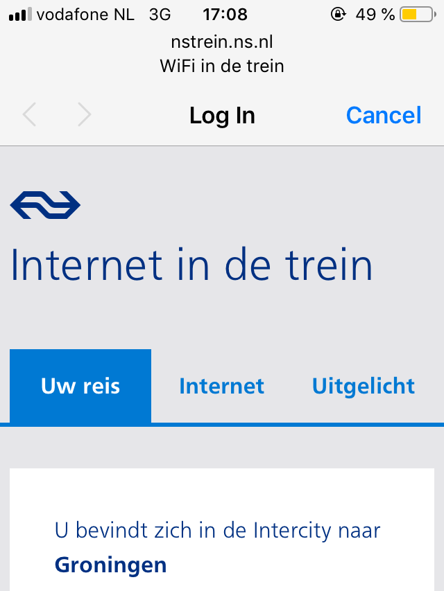

If you take metro and stand facing doors, it might feel as if the train goes straight without turns. Though if you look back and the previous car can be seen, you'll notice that it's wriggling from side to side.
That's what I ended up with while trying to describe my interests in creativity. To capture and share such moments, mostly by photography now, occasionally by text. So at first, it was some DIY weblog, then I moved to LiveJournal. Later it was Flickr, then Instagram until it all froze in early 2018. Since then I've been thinking how to do it right. All social networks or standalone portfolio/blogging web platforms didn't appeal to me. It was either focused on different goals or just too noisy. Also, I didn't stop thinking of what to do with photographs being just a sub-second glimpse on your displays.
So here is another attempt. Now here.
There are several ways to follow:
Support me at Patreon and get printed photographs every quarter.
Join Telegram Group to discuss published notes and give any feedback. Contact me for the link at @mikesub
Oh, and I'd like to mention recent findings that helped me to decide: The Red Hand Files by Nick Cave and Sequences by Brandur Leach. Check them out. And let's start.
If we take popular JS topics currently out there, type annotations, server-side rendering (SSR) and CSS in JS are probably in the top four. Virtual DOM frameworks have come as a solution to a request of getting more code on a client side. Tools like TypeScript and Flow appeared as attempts to fix some JS parts. Also, people started to seek for ways how not to duplicate ‘view’ code between server and client. Most often it leads to running JS in Node.js on server, which comes with ‘restart every N requests’ and other implications. But people still go there to serve content faster. And it's obvious — why to take away from browsers what they do best: parsing and rendering HTML pages. And so now it's even supported by many frameworks out of the box.
But do you need all that? Do you need to add SSR to your React (insert any other Virtual DOM framework) application? Given the complexity it brings, I would say often ‘no’ and let me elaborate on that.
To show a ‘loading’ screen and do everything client-side would be much easier. Yes, it would drastically increase first page load time but if you deal with application-type website, sometimes it's acceptable. To mitigate drawbacks, there are few techniques to hack the perception of this loading time. For example, you can show placeholders for content, preparing users for actual things to appear.
BUT HEY NO, not acceptable. It can be done better. We have service workers, critical path render techniques, all those are at our disposal. And nothing's wrong with using node.js.
But then there is a thing. The markup you'd prepare on server will be static (sic!). It's a safe bet to assume that all event listeners would be attached after DOM is parsed, rendered and your JS bundles are downloaded, parsed, interpreted. And it leads to showing static markup of something intended to be dynamic, breaking UX right from the first interaction.
So it's possible that ‘loading’ screen, fully functional, yet empty is not that bad if you can't do the other option right. To show perfectly-looking tabs which are not clickable is just ignorant.

That's a splash screen for wifi on Dutch railways. The connection is often flaky as there are many devices online and cell coverage is also spotty sometimes. And so I see a page, but can't switch to a tab I need. And yes, probably it doesn't even use React, it's actually an illustration to already forgotten ‘Unobtrusive JS‘ thing, but it's the same issue.
Unobtrusive JS is still the right approach. But it adds so many things to take care of, so it's very tempting to disregard it. Hey, it loads blazingly fast on my machine, and yes, I will wait few seconds before clicking anywhere just because I know that this button, even though already rendered, won't be responsive for a while. So what should I do? Right, let's move everything to JS so there is no static markup to break. Then we got loading state and we get back to square one with going SSR.
As always there is a third option. And it can help to escape that loop: to serve content in chunks and to send parts of JS with every chunk, progressively build a page with atomic blocks, but that brings you problems with shared dependencies and some others
(╯°□°)╯︵ ┻━┻
So going SSR, first of all, you need to solve how not to show broken interface while not everything is ready to interact. And don't ignore that as network is slow, unpredictable and with few guarantees.
That's the third article in a series on TypeScript started by ‘TypeScript. Bad Parts’. You can read them in any order as they aren't really connected apart from covering the same topic. But if you can't decide, make it chronologically.
This time I'd like to show how you can leverage types to simplify your runtime code.
Let's say we have a function which calculates a flag's value based on some input. And later you use that flag to do some checks. The easiest way to write that could be something like that:
function calculateFlag(conditions) {
return "important";
}
const flag = calculateFlag(context);
if (flag !== "important") {
/* ... */
}
That would work but it's error-prone and your colleagues might signal you about it during a code review. It turns out that neither any editor nor javascript itself knows much about your flags and what values are valid there, for them it's just strings, nothing more. That's why they can't help you much in refactoring or spot a typo if you misspell a value in one of the places. The common JS pattern to mitigate that is to use an object as a poor-man enum.
const flags = { important: "important" };
function calculateFlag(conditions) {
return flags.important;
}
const flag = calculateFlag(context);
if (flag !== flags.important) {
/* ... */
}
You have your value in one place, it's easier to change it, editors might warn you if you make a mistake in accessing an inexistent property, all good. But that brings a small penalty that you introduce an object where your runtime doesn't need one. It's small enough not to care at all, benefits outweigh that clearly. Though nobody would object if some pre-compiler inlines it away as it doesn't possess any runtime value in itself.
With types, you can add that semantics to your code that it's not just a random string without adding any objects and keeping it as strings.
type Flag = "important";
function calculateFlag(conditions): Flag {
return "important";
}
const flag = calculateFlag(context);
if (flag !== "important") {
/* ... */
}
Now it knows that your function returns that value (in real life it should be a union of several valid strings) and it can check whether your if later makes any sense.
I see it as a nice example of adding more expressiveness to the language. One can argue that implementing such checks using built-in features like a plain object is even better. But I do see some value in using separate construct for these needs. Having fewer concepts is better in terms you should not have too many of them. Otherwise, it would be too low-level.
Another take on that (and actually the original premise of that note) is that I tend to use TypeScript solely as a type annotations system and try to avoid any additional features it brings and enums is one of them. And so this example is a nice one to demonstrate that you don't need enums for that, just use a union type and you're good. Hello, flag.isImportant().
That's the third article in a series on TypeScript. You can read them in any order as they aren't really connected apart from covering the same topic:
That's the second article in a series on TypeScript started by ‘TypeScript. Bad Parts’. You can read them in any order as they aren't really connected apart from covering the same topic. But if you can't decide, make it chronologically.
So what do types bring to JS? They fix some bad parts of JS, but that's a byproduct. Mainly they add some semantics to code which helps editors and people to get more sense what it's doing, how it should work and also spot some things which can be optimised. Let me show-case that with several examples.
Runtime checks
Say, we have a function which takes a configuration object, which is a JS way to have named arguments, and it really needs url out of it.
function main({ url }) {
// ...
}
It can not do a thing without url, no fallback or default value possible. So there are two options, either to exit silently returning undefined or, to make it more explicit, to throw an error:
function main({ url }) {
if (!url) {
throw new Error("no URL provided");
}
// ...
}
That should work. If somebody fails to put URL there, they notice it ASAP. But since it's not really named arguments there but just a fake, the code might fail even before. If one doesn't provide an object at all, we'll get:
TypeError: Cannot destructure property `url` of 'undefined' or 'null'.
Let's not discuss the fact that my Chrome can't decide what it gets there: null or undefined, and try to fix that.
function main({ url } = {}) {
if (!url) {
throw new Error("no URL provided");
}
// ...
}
Now it's better. Though now it looks stupid. We've just provided a fallback value to be able to throw an error which can not be caught and recovered from.
And that's all happening in runtime. The code is there: parsed, evaluated, running, though isn't helping at all. If you use type annotations you can prevent that thing before runtime.
Instead of providing a default value and throwing an error, we state that the argument is required and it needs to have url key which is a string. That's not ideal as any string, even empty one, will pass. But TypeScript might evolve to it at some point: regex-validated string type. And as of now, we're already preventing some errors w/o any runtime costs.
That's the second article in a series on TypeScript. You can read them in any order as they aren't really connected apart from covering the same topic:
I've been writing TypeScript for more than a year now and gone through well-known five stages of grief so it's time to share my experience. It all started as a compilation of tips & tricks I've discovered so far. Then it went to a more meta level of what types bring to JS at all. And as I was writing two pieces asynchronously I began to find myself noticing ‘bad’ parts here and there. At some point, there were enough of them for a separate discussion. So to keep those original ideas free of them, here they are, unordered.
Slowness
Everything is pointing out it could be considerably faster. I should admit it's slow but stable so if authors had to choose between those, they did the right choice, but hey, it's v3 already, maybe it's time to address that.
Cryptic error messages
They are. When you rely much on type inferring, it's even worse. Basically, they are generic stack traces which most of the times I see in a hint window in VSCode. They're not alone, some other languages are also known for it, but that's not an excuse.
Types vs. interfaces
As of TS v3, I don't see any difference in them, practically speaking. Yes, interfaces can be extended and merged but differences are so subtle so it adds more confusion in the current state of things than benefits.
Const enums
If you prepend enum declaration with const the compiler inlines it without creating an object. I can't see why I have to make that choice, the compiler has all the knowledge (actually even more than me) to decide whether it makes sense or not.
Index signatures
In JS you can put anything as a key in object and it will be converted to a string. TS decided to improve that a bit and allows { [key: number]: boolean }. Basically, it points that even though key is to be coerced to a string, let's check that we pass only numbers here. But then we get these:
type A = { [k: number]: any };
const a2: A = { 2: true }; // alright
const a1: A = { string: true }; // error, fine
const a3: A = { "2": true }; // no error?
type B = { [k: string]: any };
const b1: B = { string: true }; // alright
const b3: B = { "2": true }; // no error, fine
const b2: B = { 2: true }; // no error?
And Object.keys() is not a generic, because it can't be as it always returns strings. The coercion was irreversible, nobody can convert strings back to original types for you. You're alone.
Object.keys(); // {} => string[]
And the last, not the least, is that you can only use primitives there, not your own types:
type Id = number;
type Item = { id: Id };
type Index = { [k: Id]: Item }; // nope, number please
Type Inference
That's nice. You feel good when you can drop obvious cases. It feels like language has done its homework. But then it starts taking defaults when there are multiple options and now you should be aware of them.
const x = [2, true];
// (number | boolean)[], not [number, boolean]
And when you return different shapes of objects from a function (say, redux reducer), inference creates monsters.
Possible solution might be to add strict check similar to disabling implicit ‘any’ to avoid this monsters guessing and fail to infer when it is ambigious.
Global scope
If you write TS for a browser, thus adding dom in compilerOptions/lib, lots of useful types become available in the global scope. And you don't need to import them explicitly. You know what it means. And they aren't grouped into a namespace. Yup.
Some are easy to expect as XMLHTTPRequest but others have more abstract names: AlignSetting, Transport. You will notice errors if you would try to define them in your code:
type Transport = ...;
// duplicate identifier, was already declared in dom.d.ts
But you might miss the error if you just forget to define it and thus built-in will be used. And even worse will happen if you clash with built-in interfaces, as they will be merged:
interface Account {
foo: "bar";
}
let x: Account = { foo: "bar" };
// missing displayName, id, rpDisplayName from type 'Account'.
Official documentation
It's lacking behind. TS v3.3 is the latest now. BigInt has been added in v3.2 but official documentation hasn't been updated.
Syntax
JS started to feel heavy when they added object destructuring. Then defaults and renaming came. Only type annotations were missing. Oh, it could be nested. I know it can be easily avoided by code style rules but still sometimes I find myself hitting the timeout in trying to parse the function declaration.
Alright. The path for more positive things looks much clear now. If you have any comments, please reach out to me, I'd love to discuss that in more details. And stay tuned, originally planned articles will follow.
Update
This article started a series on TypeScript. You can read them in any order as they aren't really connected apart from covering the same topic:
Прошло полгода после анонса, а я так и не закончил свою первую заметку про Нидерланды. Чтобы как-то сдвинуть дело, начну выкладывать черновики записей: https://t.me/transmith Возможно, позже получится из них собрать что-то полноценное.
Стояло жаркое лето середины 90-х и я пытался изо всех сил угнаться за своим братом на велосипеде. Он ехал на «Украине», я на чём-то поменьше. Первые километра четыре шли по довольно спокойной асфальтированной дороге, одной из тех, которая ведет от шоссе к десяткам деревень и дачных посёлков. Оставшийся же путь надо было проделать по пыльной обочине горьковского шоссе. Там, где-то не доезжая Покрова, было что-то придорожное, где можно было купить аэрозоль против насекомых. Он понадобился, чтобы вывести совсем уж наглых размеров осиное гнездо на чердаке дома, где мы летом спали.
Жару усугубляли резкие порывы горячего пыльного воздуха от фур, проносившихся мимо. Когда мы доехали до заветного грубо сколоченного придорожного ларька, помимо аэрозоли брат купил банку Amsterdam Navigator. Он был крепкий, теплый и пена из банки моментально сделала наши руки отвратительно липкими.
Спустя лет пятнадцать, пасмурным осенним днём мы купили бутылку виски, поехали в нижнее течении Москвы-реки, и надев резиновые сапоги, зашли постоять в воду и выпить. Так мы тогда оказались в Лыткарино, на другом берегу реки от деревни Андреевское. Там были очистные сооружения, 24 маленькие градирни, бывший колхоз им. Ленина, испытательный комплекс Центрального института авиационного моторостроения и жилой комплекс «Адмиралтейский». Через несколько месяцев со мной на фликре связался дизайнер из Голландии и предложил купить права на фотографию, сделанную в тот день. Я согласился и спустя некоторое время в Голландии вышел какой-то проходной роман с моей будущей женой и её подругой на обложке. Мне прислали несколько экземпляров и тогда я решил при случае выучить голландский, чтобы всё-таки прочитать эту книгу.
Еще переместимся на шесть лет вперед, и вот я выхожу из аэропорта Скипхол, еду заселяться в номер отеля, на следующий день приезжаю в офис какого-то издательского дома, прохожу интервью и в результате, получив офер, решаю остаться в Москве. В тот же день происходит авиакатастрофа рейса MH17 Амстердам—Куала-Лумпур в Донецкой области.
Еще вперед на три года и вот я уже не обращаю внимания на дождь, если это не ливень, у меня уже украли один велосипед и, кажется, я готов рассказать про вотсап-дружины, про фризский язык, про особенности банковской системы, про то, что почти невозможно возить велосипеды в электричках и про то, что имеет смысл дарить уезжающим сюда.
On December 2006 I joined a digital agency as a humble HTML coder. There was neither Chrome nor iPhone yet, IE market share was around 85%, table-based layouts ruled the internet and we all were debugging using window.alert calls.
Fast-forward 10 years. Chrome's released v.54, iPhone is in its 10th generation, IE has less than 15%. Web standards and its support, development tools and other technologies involved improved drastically but same happened to the complexity of products being developed nowadays. And it seems that these things are evolving nearly at the same rate. There is more or less same gap there, dev.tools can't keep up with things for which we use them. Be frank, it's still a pain in the neck to develop front-end stuff. We've conquered basic blocks, but interfaces are getting more sophisticated, the web is being accessed from more devices, etc.
Ну а если серьёзно про 2015 год, то чаще остального мы вспоминаем момент с одной из пробежек. Мы подбегали к небольшой горке, по которой поднимался мальчик лет 5-6 на
велосипеде. Ему было тяжело забираться, но он не сдавался, медленно и методично крутил педали. Тут мы с разбега забегаем на эту горку и начинаем его догонять. В
какой-то момент равняемся с ним, а потом начинаем медленно обгонять. Мальчик сначала прибавляет и пытается не дать себя обогнать, всё-таки он же на велосипеде, но
вскоре сдаётся и произносит как бы про себя, но вслух, в сторону: «Пусть бегут».
Я очень скучаю по чистой вкладке, пустой белой странице. Когда-то все браузеры при открытии вкладки показывали
чистую страницу и пользователь мог либо ввести адрес в адресную строку, либо выбрать страницу из закладок. Потом интерфейс
стал обрастать и появился вывод истории недавних посещений, списки популярных сайтов. Гугл начал показывать по сути свою
стартовую страницу, одно время показывал свои приложения и т.п.
Одно время это было опционально, но сейчас уже в хроме настроить показ пустой страницы нельзя. Вслед за ним опера и
яндекс также не дают такую возможность. В сафари и фаерфоксе такая опция осталась, но неизвестно надолго ли.
Я держу свой рабочий стол (тот, который на компьютере) абсолютно пустым, без обоев, с одноцветной заливкой. Переключаясь
на него, я попадаю на чистый лист и из спотлайта начинаю новую задачу. Также и в браузере. Если мне операционная система
вместо пустого десктопа будет выводить какие-нибудь списки недавно открытых файлов, популярных приложений — не знаю
смогу ли я к этому привыкнуть, либо придется искать обходные пути отключения этой функциональности.
На написание этой заметки меня натолкнул
flickr tab, расширение для хрома, которое в каждой новой вкладке показывает
случайную популярную фотографию с одноименного сервиса. Я его установил в попытке избежать мусорной стартовой страницы.
Но в результате поймал себя за тем, что открывая новый вкладку, я автоматически открываю еще одну, так как срабатывает
рефлекс того, что я очутился не на новой вкладке, а просто переключился на какую-то старую, в которой что-то уже открыто.
Ну и немного про обои рабочего стола: из-за моих настроек я долго не замечал в yosemite полупрозрачного фона боковых
панелей, меню и прочих элементов. Из-за однотонного темносерого фона я просто считал, что всё в новой ОС тускло и
странно. Только случайно, поставив каких-то ярких слонов на рабочий стол, я заметил эту полупрозрачность. Слонов я убрал
и поставил крыжик в system preferences > accessibility > reduce transparency, чего всем и советую.
Да, веб-приложения сейчас часто неудобнее нативных аналогов. На мобильных платформах это еще больше ощущается, чем
на десктопах. Одновременно с этим то, что открывается по ссылке в браузере, далеко и давно ушло от понятия
веб-страницы. Даже простейший блог со статьями, который, казалось бы, наиболее близок к тому, зачем придумали интернет —
уже не список статей с перекрестными ссылками. Поиск, комментарии, админка — всё это ближе к сервису/приложению нежели
к странице.
Но разработчики веб-сервисов с одной стороны и разработчики браузеров с другой до сих расценивают интернет как список
веб-страниц.
Представьте, если бы при запуске нативного приложения, вы бы попадали на лэндинг/промо- страницу с описанием сервиса, а
не туда, где вы остановили работу в этом приложении. В вебе такое еще можно встретить.
Представьте, что ваш док приложений — список безликих иконок «программа». В вебе сейчас это так. В Apple пошли
дальше и убрали даже фавиконки у закладок в Safari.
Представьте, что каждый раз при запуске приложения вам необходимо было бы вводить логин/пароль. Такое в вебе еще встречается.
В идеале вся авторизация в вебе должна остаться в случаях, требующих дополнительной защиты. Также как в нативных
приложениях 1Password требует дополнительную авторизацию, а почтовый клиент не требует, также и в браузере интернет-банк
пусть требует.
А теперь представьте, что вы могли бы себе в док (или из спотлайта) попасть сразу в нужную папку вашего почтового клиента
или в нужный список reminders в обход разводящего экрана.
Но мы неизбежно к этому идём и те, кто избавляются от концепции URLов в своих веб-приложениях (привет, интернет-банки),
кто по умолчанию выставляет режим «не запоминать пароль» — все они идут не в ту сторону.
Изначально HTML создавался как markdown или разметка wiki. Как сейчас нет markdown-верстальщика, word-писателя, так и
изначально не было HTML—верстальщика. Это было еще один формат разметки текста.
Почти сразу HTML стали использовать не для создания документов с гиперссылками, а чего-угодно с гиперссылками.
Так появились веб-сайты: интерактивные документы, с одной стороны пытающие предоставить интерфейс по аналогии с GUI
всего остального компьютера, с другой стороны предоставить вёрстку в полиграфическом смысле. Технология этого
не позволяла. С интерактивностью еще куда ни шло, появились веб-формы, а вот с вёрсткой (раскладка, сетки,
блоки) — с этим были большие проблемы. Но никто ничего знать не хотел и поэтому в ход шли таблицы, распорки в виде
прозрачных изображений и т.д. Собственно, из-за этого вся эта сложность, инструментария нет, есть несколько программ
(браузеров), которые воспринимают инструкции по—разному, а плохие дизайнеры показывают нарисованные макеты в растровом
графическом формате и настаивают на своём.
Поэтому выделились люди, которые могли как-то заставить браузер отрисовывать то, что нарисовал дизайнер. Cо временем,
технологии и инструменты прогрессировали и эволюционировали, и стало возможным верстать предназначенными для этого
средствами, а не костылями. Так ушла вёрстка таблицами, но до сих пор нет инструмента, который бы позволил полностью
правильно сделать то, что вы рисуете. Но, конечно, ситуация гораздо лучше, чем несколько лет назад. Сейчас, если брать
современный браузер, то, в целом, в HTML есть все нужные средства, и он опять превращается в более-менее простой
инструмент вёрстки. В рамках прототипов/макетов на нем можно писать человеку не сильно вовлеченному во все
эти технологии.
Также сейчас с появлением AJAX-подгрузки частей страницы, возможностей анимации, адаптивного подстраивания под разные
размеры окна, всё это сложнее и сложнее умещать в плоский PSD-макет. Теперь вместе с макетом идёт документация или
раскадровка разных состояний. Но когда перед разработчиком плоский макет, то не видно всей логики, которую
закладывал проектировщик/дизайнер: это просто два разных цвета, или этот цвет — функция от того цвета (затемнение на
20%), это 10px или это расстояние зависит от состояния вот того блока, или это какой-нибудь «стандартный отступ при
таких-то условиях» и тому подобное.
То есть информация заложенная дизайнером так или иначе теряется, и приходится сажать рядом дизайнера, чтобы он объяснял
по картинке, почему где как, или писать документацию, или дробить разработку на много итераций, постоянно показывая
результат и внося в него изменения.
И тут начинается самое интересное. Сейчас технология развивается, уже можно делать раскладку без использования неявных
побочных эффектов каких-либо свойств, уже можно сохранять зависимости размеров, цветов и прочего используя удобные
пре- и пост- процессоры, которые довольно по-человечески работают.
И, возвращаясь к интерактивности, популярного сейчас параллакс-эффекта и т.д., win-win ситуация для проектировщика
интерфейса — когда он как минимум на одном языке разговаривает с разработчиком, и как максимум, а технологии уже
это позволяют, набрасывает какие-то прототипы, которые верстальщик уже потом доведёт до своих стандартов качества,
не забудет про всякие сложные моменты и сделает, чтобы это везде работало, как задумано.
ну и конечно все эти анимации и резиновость - это тоже на статических макетах не опишешь, приходится отдельно
документацию какую-то прикладывать, которая слепая (всяко лучше самому это реализовать и увидеть как это
на самом деле в браузере будет работать).
Поэтому веб-вёрстка, изначально зародившаяся как инструмент программиста, после этого выделившись в отдельную
специализацию, сейчас плавно и верно перетекает в сторону проектировщиков интерфейсов и это отлично. А верстальщики
вместе с этим плавно перетекают либо в дизайнеров, либо в программистов и это прекрасно.